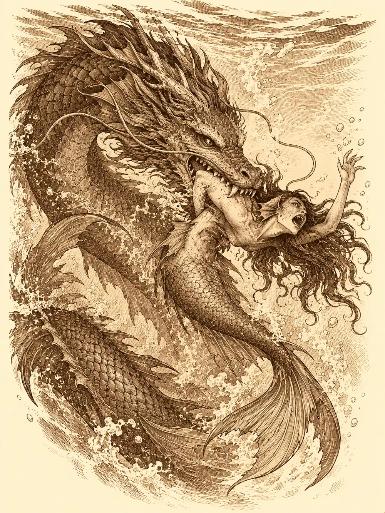

Capítulo 152
Tratos y espadas
Libro IX · Mareas y muertos
El despacho de la shogun olía a lacre caliente y a papel recién cortado. Sobre la mesa se amontonaban tratados con puertos lejanos, cuentas de importación y cartas a medio escribir, y los economistas de palacio hablaban de exportar más y de hacerlo pronto. Calista los escuchaba con la espalda muy recta. Desde la noche del baile apenas había salido de aquella habitación. De la mansión de Alister había vuelto viva, con Gelbreak y con Verbin, y tan cansada que todavía le dolían los hombros al recordarlo; después se había encerrado en el gobierno, en la milicia que hacía falta reforzar y, sobre todo, en el comercio exterior. Kuroto ya no estaba en crisis. Ahora había que hacerla crecer.
Cuando los economistas se marcharon, vio a los dos artificieros esperando junto a la puerta.
Archi venía a contarle que había trabajado más que nunca con Víctor Frankenbolt en sus fuentes de energía, que había llenado mesas de planos y que ninguno de sus proyectos acababa de adaptarse. Le faltaba un mineral exótico, algo que no se encontraba en la isla. Guxi tenía un problema parecido. El aparato que Calista le había encargado para examinar mercancías debía proyectar una ilusión con el contenido de las cajas grandes, pero los cristales de Kuroto rendían bien y recibían mal; necesitaba uno de mayor reflexión arcana. Mientras lo explicaba, se miró sin querer el dedo donde hasta hacía poco había llevado el anillo de compromiso.
"Dentro de poco salgo hacia Puerto de las Espadas", dijo Calista. "Si tenéis tiempo, venid en el barco y buscadlo vosotros mismos".
Gelbreak no podía llevarlos con su magia a un lugar que no conocía, así que irían por mar, en el gran barco que Guxi había construido y que ahora pertenecía al shogunato. Archi se ofreció a vigilar al joven. "No se preocupe, majestad, yo cuidaré de que mi pequeño aprendiz se porte bien". Guxi le recordó, sin ninguna paciencia, que no era aprendiz de nadie.
Los muelles habían cambiado. Había tritones por todas partes, cómodos junto al agua, y amarradas a los pilotes flotaban embarcaciones con forma de caracola de las que tiraban hipocampos. Archi llegó arrastrando un carro bajo y larguísimo cargado de chatarra, vigas partidas y trozos de hierro, con Frank, su pequeño perro mecánico, trotando a su lado. Se acercó a un tritón, le ofreció unas monedas por ayudarle a cargar y recibió una respuesta en una lengua que no entendía. No hizo falta traducirla. El soldado escupió al suelo y se apartó.
Calista le explicó que había pedido ayuda militar a su pueblo para ganar la guerra y que los tritones no trataban bien a los de la superficie. Archi le aseguró que era una gran decisión política. Ella notó en su cara que lo decía por compromiso y le pidió que no le endulzara el oído en privado. Su único motivo, dijo, era ganar la guerra.
Salieron de Kuroto sin problemas. Alrededor de la isla nadaban grupos de tres o cuatro tritones patrullando un mar muy amplio, y entre ellos iban druidas de su pueblo con criaturas hechas de agua que solo se distinguían cuando asomaban; al hundirse se volvían invisibles. Al ver el estandarte del shogunato se apartaban y los dejaban pasar, mirando sobre todo a Calista. Gelbreak, como en cada travesía, vomitaba por la borda.
Ella le acarició la espalda y fue a sentarse junto a Guxi. El barco, le confesó él, le traía recuerdos bonitos y amargos. Calista no lo consoló con mentiras: había hecho daño a Serafina, quizá sin darse cuenta, y si quería recuperarla tendría que hacer algo grande que demostrara lo que sentía. Una cita preparada con sus manos, una playa de noche, luces, cohetes. "Eres artífice. Usa tu ingenio". Guxi le dijo que ya estaba pensando en algo.
Fue entonces cuando Archi oyó la música.
Se le metió por los oídos como agua tibia. Bajo la superficie se movían figuras de mujer con cola de pez, y Calista las reconoció enseguida: sirenas, y su canto no traía nada bueno. Una se hundió unos pies, salió disparada hacia arriba y se asomó junto a Gelbreak para susurrarle algo al oído. El drow estaba tan mareado que ni se enteró.
Calista sí. Fue hacia la sirena con una furia que nadie le había visto, la arrojó lejos del barco y se lanzó al agua detrás de ella. Mientras tanto, Archi flotaba ya sobre el mar, atraído por una voz que lo llamaba pequeñito y le pedía que bajara a chapotear. Una sirena lo abrazó, y él abrió los brazos y sonrió. Frank le disparó un rayo para despertarlo, falló y empezó a dar vueltas pitando como una alarma. La sirena se hundió con el gnomo a treinta pies de profundidad.
Archi notó agua en la boca. Sin pensarlo, conjuró una burbuja de aire alrededor de la cabeza y recuperó la sonrisa, porque podía respirar y la criatura seguía siendo hermosa. Luego algo se le despejó por dentro. La sirena le sonreía con una hilera de dientes afilados y unas branquias que se abrían y cerraban junto a los ojos.
"¿Qué diablos?".
Guxi disparaba desde cubierta con su torreta a enemigos que apenas veía bajo el agua. Gelbreak consiguió por fin dejar de vomitar el tiempo suficiente para luchar con su magia. Y Calista, ya transformada en dragón, perseguía a la sirena que se había atrevido a acercarse a su pareja y le prometía arrancarle las branquias una a una con los dientes. Cuando la alcanzó, la mordió y la sacudió como un perro sacude un trapo.
Entre los cuatro acabaron con ellas. Archi salió del agua impulsándose con sus botas y su levitación, y Guxi bajó volando con su capa a recogerlo. "Gracias, joven Guxi". Calista subió a bordo empapada, todavía insultando a las sirenas.
La travesía duró unas dos semanas. Archi pasó muchas horas en lo alto del barco construyendo un pararrayos retráctil que solo atraía los rayos cuando él lo desplegaba con una manivela, y lo terminó sin necesidad de robarle noches al sueño.
Llegaron de noche. Puerto de las Espadas era la ciudad más grande que la mayoría de ellos había visto: unos doce mil habitantes, calles enteramente empedradas, plazas de piedra y pocos parques. En el puerto, el barco de Guxi parecía un juguete entre navíos enormes, algunos parecidos al suyo pero con turbinas extrañas, y otros que flotaban en el aire con velas en forma de ala.
Archi se arrodilló y besó el suelo. "Por fin, civilización". Guxi gruñó; él echaba de menos su tierra. Un guardia les señaló la Trucha Borracha mirándolos como lo que eran, extranjeros. En el letrero, una trucha se derramaba una jarra de cerveza por encima.
Calista había recibido una carta de un comerciante que quería revisar sus tratos con Kuroto y la había citado allí. Dentro, el ruido era tremendo, el suelo estaba pegajoso y la shogun arrugó la nariz más tiempo del que dedicó a buscar a su contacto. Mientras bebían, el gnomo le explicó a Guxi cómo funcionaba la ciudad. La gobernaban tres dirigentes elegidos entre los líderes de los clanes mercantes: ahora un humano de la navegación, una elfa de la bisutería y un enano de la minería.
En otra mesa, un hombre contaba monedas de oro rodeado de mercancía. Entre sus cosas había una piedra que a Archi le hizo abrir los ojos como platos. Se acercó, se presentó como comerciante y le preguntó el nombre.
"Thomson".
El mercader quiso saber si tenía dinero. Archi hizo sonar una bolsa llena, y el hombre dejó una moneda en la mesa y lo invitó a su taller, allí al lado. Al salir, el gnomo dedicó a Calista una reverencia tan pomposa como mal hecha. Ella lo vio marcharse solo con un desconocido y envió un mensaje a Guxi: por todos los dioses de Kuroto, que fuera con él. Guxi lo alcanzó en la calle, y Archi lo presentó a Thomson como su aprendiz.
El hombre que buscaba Calista era rechoncho y comía un muslo de pollo con trozos de piel pegados a las mejillas, mientras un asistente esperaba a su lado con los hombros caídos de quien ya no espera nada. Era don Purlock. Se limpió la mano en su propia camisa y aun así quiso besarle los dedos con la suya todavía goteando. Calista le dirigió al asistente una mirada de lástima.
Fueron a su casa. En la puerta, Calista tomó a Gelbreak del brazo y le recordó en voz baja los problemas que habían tenido con aquella ciudad. Él le levantó un poco la camisa para comprobar que llevaba la armadura debajo.
Purlock fue al grano. Había visto los barcos de Kuroto en el muelle y dejaban mucho que desear. Él tenía navíos más rápidos, capaces de hacer dos o tres viajes en lo que tardaban los de la isla en hacer uno. Se los prestaría a cambio de un porcentaje y de una condición: todos los barcos que salieran de Kuroto a comerciar debían ser de su empresa.
"No puedo entregarle todo el comercio de un país", dijo Calista. "Puedo ofrecerle una parte".
Él insistió en que ningún ingeniero de la isla podría superar a los de su ciudad. Mientras discutían, Calista miró los papeles que había sobre la mesa y reconoció un sello. Lo había visto en aquella misma ciudad y lo había visto en Kuroto, sobre las cajas en las que encontraron el Nox. Los documentos hablaban de barcos, contratos y rutas comerciales. Dio la reunión por terminada con mucha educación: confiaría en sus propios ingenieros y en los planos que pudiera comprar. Purlock y su asistente cruzaron una mirada. Al pasar a su lado, Gelbreak le dijo por señas que estaban muy nerviosos y que tuviera cuidado.
En el taller, los muchachos de Thomson no parecían trabajar en nada. El mercader extendió la mercancía y Archi examinó la piedra. Tenía propiedades mágicas y era justo lo que buscaba. Mandó un mensaje a Guxi para que no mostrara interés. Uno de los hombres sacó cristales vacíos, hechos para almacenar energía, y Guxi pensó que podían servirle. Thomson golpeó las dos bolsas con un palo para oír cómo sonaban y sonrió.
"Ahora es cuando me dais vuestras bolsas".
Archi apoyó la mano en la mesa, rozó la piedra y le dio vida con un conjuro. A la piedra le brotaron unas patitas minerales, cruzó la mesa corriendo y se lanzó a su bolsillo como quien se tira a una piscina. El gnomo le lanzó a Thomson una sola moneda de oro y desapareció de la vista.
"¡A por ellos, chicos!".

Los trabajadores se arrancaron el disfraz. Debajo llevaban túnicas negras, capuchas, espadas cortas y arcos. Las flechas buscaron a Guxi, que acabó con varias clavadas. Respondió con una tormenta de hielo que también alcanzó a su compañero invisible, levantó de punta a punta de la casa un muro de fuerza que nadie podía atravesar y salió a la calle gritando a la guardia. Archi cerró las puertas con un candado de magia, llenó la sala de unas luces cambiantes que dejaron embobados a casi todos los asaltantes y escapó con la piedra.
A la misma hora, en otra calle, Calista y Gelbreak salían de la casa de Purlock cuando los atacaron también. Ella paralizó a varios enemigos, él los golpeaba con su magia y su estoque, y un bruto con la cabeza de metal les hizo tanto daño que rompió la transformación de dragón de la shogun. Calista saltó, le agarró la cabeza metálica y le soltó una descarga. Al final vencieron y se curaron como pudieron.
La guardia de la ciudad encontró un muro invisible y unas puertas que no se abrían. Cuando el muro se deshizo, salió Thomson, malherido. "¡Nos han atacado! Eran dos, uno era un gnomo". El guardia miró a Guxi, cubierto de sangre y de flechas. Guxi le contó que habían ido a comprar, que los habían amenazado con espadas y arcos, y que solo se habían defendido. Habló con tanta sinceridad que el guardia frunció el ceño, dijo que allí había algo extraño y le pidió que lo acompañara a responder unas preguntas. No lo acusaban de nada. Guxi aceptó y no intentó huir.
Calista volvió a entrar en casa de Purlock y cerró la puerta tras de sí. El asistente retrocedió hasta la pared.
"Fueron ellos", balbuceó Purlock. "Me dijeron que la trajera y que le hiciera la oferta". La shogun le ordenó arrodillarse y él se negó; entonces le puso la punta del estoque en el cuello, sacó un contrato mágico y le explicó que, como compensación por aquella noche, Kuroto recibiría parte de su flota. El comerciante sintió el frío del acero y firmó.
"Dile a quien tú ya sabes que no me subestime".
"Sigue jugando con él y acabarás mal, muchacha".
"No estoy jugando. Me estoy defendiendo".
Antes de irse, con la punta del estoque, le escribió en el pecho, en la lengua de los tritones, que Calista había estado allí. Luego tomó del brazo a Gelbreak. "¿Nos vamos, cariño?".
En la calle se cruzaron con un niño que no debía andar suelto a esas horas. Les preguntó si sabían que la gente de Kuroto tenía problemitas, y cuando lo apartaron, el niño se deshizo del disfraz y apareció Archi, que les señaló el final de la calle. Allí estaba Guxi, entre dos guardias, respondiendo a todas sus preguntas. Archi llevaba en el bolsillo su piedra y Guxi había conseguido los cristales vacíos. La investigación de la guardia seguía abierta, y Purlock había firmado un contrato que todavía nadie sabía cuántos barcos iba a entregar.
En el viaje de vuelta, sobre el mar de Kyushu, Archi esperó una tormenta. Colocó un trozo de fluorita arcoíris en su pararrayos, mandó a R3, su autómata, girar la manivela, y una cuerda animada lo ató a cubierta. El rayo cayó sobre el aparato, lo desbordó y descargó sobre el gnomo, que se desplomó sin sentido. R3 le soltaba pequeñas descargas para despertarlo y pitaba pidiendo ayuda. La palabra curativa de Calista no lo despertó. Guxi subió de la sala de máquinas dispuesto a devolverlo a la vida, y Gelbreak, pálido de mareo, le repetía que el gnomo no estaba muerto.
Entonces apareció una bufona que dijo haber viajado escondida en el equipaje de Archi y se ofreció a ayudar a cambio de un juego futuro. Gelbreak la encaró con el estoque. Ella le insufló aire al gnomo, que abrió los ojos y la saludó como a una vieja conocida. Hubo conjuros cruzados, y Calista y Gelbreak acabaron desapareciendo del barco en un destello. Guxi se encerró en la sala de máquinas y apretó la marcha. Archi tenía cosquillas en las manos y chispas pequeñas en el bigote, y ya quería repetir.
En palacio, la luz blanca iluminó el dormitorio de la shogun. Calista se sentó en la cama y habló de la amenaza que atribuía al gobernador de Puerto de las Espadas y del miedo a que Kuroto no pudiera responder. Estaba agotada. Gelbreak la abrazó y le dijo que lo resolverían juntos. Ella confesó que solo quería marcharse y ser libre unos días, que nadie supiera que habían vuelto. El barco aún tardaría una semana. Él propuso un lugar que ambos conocían, ella aceptó con una sonrisa y se marcharon en otra luz blanca.
Una semana después, el barco del shogunato entró en el puerto de Sho con el casco castigado por el oleaje y por los rayos que Archi había intentado atrapar.
Serafina estaba sentada en Sho, pensando en Alister y en qué diría la gente si se enteraba, cuando le cayó una carta en las manos. Reconoció la letra de Guxi. La invitaba a unas copas en la taberna de Ushi y firmaba como el Terror Metálico. Sonrió, se arregló la ropa, se puso el collar que él le había regalado y salió.
Lo encontró solo al fondo, vestido de pirata, mirándola como un seductor de taberna. Ella le siguió el juego y se presentó como la Tempestad. Apostaron en un duelo de bebida: un beso si ganaba él, su navío si ganaba ella. Las rondas se sucedieron entre pullas, y en algún momento Guxi se hizo un corte superficial para no dormirse; Serafina se asustó y se enfadó, pero siguieron hasta declarar un empate, los dos muy borrachos. Entonces ella lo besó. Le dijo que su corazón ya tenía dueño, y el dueño era él, y que esperaba recuperar su anillo. Guxi se quitó a medias el disfraz y le repitió que la quería.
Serafina le confesó que se había acostado con el hombre de la fiesta y que había tenido intenciones con Kurobane, a quien le había trazado una ese en el pecho. Guxi le contestó que entonces no estaban juntos y que no había nada que perdonar. Se besaron otra vez. Ella bromeó con la idea de ser cuatro, sin que ninguno lo tomara en serio, pagó parte de la cuenta y él quiso acompañarla.
En la base, Guxi apenas se tenía en pie. Ella no tenía cuarto propio, así que lo llevó al de él y lo acostó. Él le pidió que se quedara. Serafina le quitó el sombrero, le besó la frente y lo arropó. Se durmió murmurando que no lo abandonara.
Ella bajó a la sala. Allí la encontró Kurobane, vestido de blanco. Hablaron de la fiesta. Él admitió que se había colado en el baile por ella, y Serafina le dijo que Guxi también, y que le debía un baile. Cuando le preguntó por su interés en Calista, Kurobane habló de su libertad y de Osuray: lo habían elegido para el ritual durante su formación, sus compañeros habían muerto y temía desaparecer si la sombra le robaba el cuerpo. Serafina le prometió ayudarlo.
Después él se acercó demasiado. Ella le pidió que parara, le recordó que otra noche no había estado en sus cabales y le dijo que no podía corresponderle. Kurobane la acorraló contra la pared y le anunció que aquella noche sería suya. Serafina se quedó paralizada. Por dentro se repetía que dijera que no, que se moviera, y el cuerpo no le obedecía. Él le besó el cuello y le dejó una marca pequeña. El alcohol, el mareo y todo lo que llevaba encima la dejaron sin defensa, y se dejó llevar a la habitación sin voluntad. La puerta se cerró.
Guxi se despertó gritando el nombre de Serafina. No estaba a su lado. La buscó por toda la base y salió a la calle con el miedo de que volviera a dejarlo.
Ella caminaba hacia el puerto con resaca y una culpa que le pesaba más que la cabeza. Le volvían recuerdos de su infancia entre piratas y de los años de mar, y en mitad de un puente de madera, golpeando las barandillas, pensó que bastaría un paso. El saludo atronador de Banzo la sobresaltó y la hizo retroceder. El goliat seguía su ronda animando a la ciudad a voces, sin dar muestras de saber nada, mientras un vecino le protestaba desde una ventana.
Guxi oyó sus gritos y llegó corriendo. La abrazó. Se dijeron su dolor y lo mucho que se necesitaban, y al final Serafina le devolvió el abrazo, le pidió perdón y le repitió que lo quería. Decidieron volver a casa. Entonces crujió la madera que ella misma había golpeado. Serafina intentó apartarlo del peligro, él la agarró y el puente cedió bajo los dos.
En el agua, Guxi apenas sabía nadar. Fue ella quien lo arrastró hasta la orilla. Allí notó que le sangraba la cabeza y se desplomó inconsciente sobre él. Guxi la abrazó y siguió lanzándole curaciones mientras el agua le chorreaba por la cara.
Esa misma temporada, una cucaracha entró en palacio y se convirtió en Channi en el cuarto de las niñas. Shizuka acababa de agujerear la pared con un conjuro de desintegrar que decía haber copiado a Gelbreak. Channi la admiró y confesó que no sabía si ya era cazadora: no tenía collar. Shizuka sacó uno de su mochila y se lo colgó al cuello, y la pequeña de pico y hojas casi lloró de alegría. Luego, muy seria, le contó que el bosque se moría, que los animales huían y que los muertos despertaban. Shizuka reconoció lo que Arwen le había contado y le prometió que los cazadores lo arreglarían. Salieron al jardín a entrenar, y los guardias pasaron la tarde apagando incendios.
Días después, Channi se presentó en el gimnasio de Jin enseñando su collar. Quería ser fuerte como Shizuka y como Arwen. Jin le dio un palo de su tamaño y paró sus golpes con una espada de madera. Ella empezó atacando con los ojos cerrados y acabó en el suelo, protestó y volvió a intentarlo. Cuando Jin le dijo que respirara y sintiera el palo como parte de su cuerpo, Channi llevó hasta él la energía de sus alas y el palo empezó a brillar. Sus golpes se volvieron certeros, luego exigentes, hasta que se sentó en el suelo sin aliento. Jin le dijo que había mejorado mucho y la invitó a comer, y Channi salió del gimnasio en sus brazos, rendida, con el collar torcido entre las hojas.